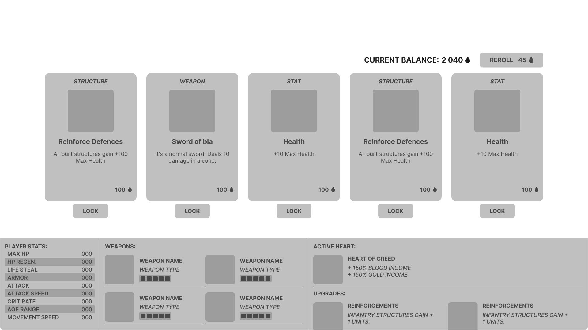
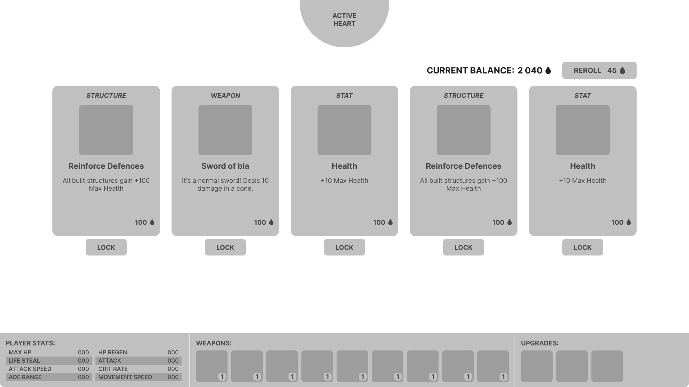

My Role(s)
UI/UX Designer, Technical Designer, System Designer
Tools
Unreal Engine 5, Figma, Miro, Github
Time
Two weeks pre-production + four weeks production.
Team size
8 people team, consisting of designers and programmers.
Vampower is a survival-like tower defense game with minor roguelike elements centered on protecting a key point from being destroyed by hordes of enemies.
The gameplay loop focuses around strategizing and becoming stronger during the night by purchasing upgrades and structures,
then fighting off the attackers during the day.
Tailor your playstyle by selecting one out of ten hearts to serve and choose between three different playable characters,
each with their own strengths and weaknesses and a different starting weapon.
I designed and implemented the functionality for all the games UI.
I started utilizing the HUD-class for handling everything widget related and used data tables to populate the UI.
I was responsible for implementing gameplay features and worked closely with the designers and programmers to build the game's systems.
I handled structuring and creating the game's data.
As survival-likes often have a lot of numbers needing balancing,
I had as a goal for this project to get all the data from data tables so editing it would be easier.
The concept was definitely overscoped for the short timeframe but even so we pulled through and made a fun and replayable game.
I developed new habits that I feel will greatly improve my workflow in the future.
I had a great experience working with my team and am super proud of the game we ended up with.
Play the game!
Itch.io Page
New workflow habits
HUD class
Use the HUD-class for creating and storing references to the UI instead of the player or controller blueprints. This greatly helped the project's structure and improved communication with the rest of the team.
Collapse Widgets
Collapse and reuse widgets instead of continuously creating and destroying them.
RichTextBlocks & RichTextStyle
RichTextStyles helps keep text consistent and makes font adjustment easier. The setup is slower to start but the time saved later is well worth it.


Pre-production
Two weeks exploring three game concepts, developing a playable prototype for each one. First half of the week went to concepting and roughly planning out the different concepts. The rest was split up into two days of development time per prototype.
Health system

I created a versatile health system with blueprints that was reused for all of the prototypes, saving on development time to work on other features.
To test the health system I made a simple target dummy with the health system properly implemented and a health bar to visualize the current health.
To deal damage I made an actor component attack that can be applied to any actor and a turret actor that fires projectiles.
Prototype
Focused on testing the core mechanic of defending a central point from waves of enemies by building structures.
The prototype features:
Simple enemies that target either the player or the central point (the heart).
An enemy spawner that spawns an increasing amount of enemies per wave.
Structures, two different types.
Actor with the attack actor component.
Turret actor that fires projectiles.
The player can interact with structures to activate them.
Day & night cycle.

Production
My UI workflow
Plan & research
I outline what UI is needed based on what information should be displayed, in which contexts and prioritize its importance over others. The importance determines how much screen space it should occupy. To help this outlining process I study games with similar mechanics and make user stories.
Layout blockout
The blockout is either on paper or in Figma, helping to iron out problems and missing pieces as well as giving me a good idea of the scope. The blockout serves as a great way to showcase my vision early and get feedback from my team as well as potential future players.
Implementation & functionality
Once the blockout is at a good stage I transition into recreating it in the engine, focusing on making it functional. The blockout helps inform how I’ll go about structuring the widgets.
Inspiration & research
I took inspiration from games in the survival-like genre for the UI. The main ones were Brotato, Soulstone Survivor, the League of Legends gamemode Swarm and a non survival-like Thronefall. Brotato was used as reference for the layout, particularly the weapon and item shop before you start a wave. Soulstone Survivor was used for the overall aesthetics and the HUD layout. The League of Legends temporary gamemode Swarm was mainly used as inspiration for how to word skills and item descriptions. Thronefall had a big influence on both the project's design and the UI. The hold to start night mechanic is one example and the minimalist UI design for menus is another.
HUD-class
The HUD-class creates and handles all the widgets logic, only exception is the in world healthbars.
I really like this approach, as it centralizes everything UI related in one place,
making it easier to manage and for others to work around.
For information other systems needed from the UI,
I created Event dispatchers in the HUD-class that the widgets triggered.
Example; when an upgrade is purchased from the shop widget that the player blueprint listens to in order to apply the changes.
For this project I tried to keep gameplay logic out of the widgets.
I only wanted the widgets to take in data, display it and handle UI related player input.
When UI input is received the widget would fire an event dispatcher so the HUD-class would be informed and handle it.
Selection Menu
Feature brief
At the start of the game the player should pick their playstyle by selecting this runs modifiers and their player character. The menu should display all the available choices and their pros and cons.

First iteration
The select menu does not have a layout blockout, but was made directly in the engine taking standards I’d made for the other menus. I reused widgets whenever possible, for example the heart select cards are repurposed build structure cards.
For later playtests the main menu was separated out into its own menu and level. This made map selection and restarting a level a lot simpler.
The Heart select cards design was simplified to fit more of them. This was accomplished by moving the additional information into tooltips.
The Quick play button was added for debug purposes. It picks all the default options, skipping the selection process getting you into the game with one click.
Ironically the best and most used feature I made, by skipping the other stuff I made.
Selection menu fully implemented
Upgrade Shop Menu
Feature brief
The Upgrade shop needed to display 3 or 5 purchasable cards. In the plan we had three different card types, Weapon cards, Structure cards and Stat cards. In the final game the structure cards got removed because they didn't get applied properly. The shop has a randomness to what cards get displayed and the player has the option to reroll the selection. The cards can also be locked so they won't get rerolled. The player should also be able to see their current stats and previously purchased upgrades in order to make a more informed choice.
Blockout
For the upgrade cards I had a lot of references to go from. The difficult part was figuring out how to place the current player information. Their weapons, their stats and upgrades. I got stuck moving things around but didn't find something I was satisfied with it.

Reimagined blockout
Now having taken time away from the project, I tried tackling the main issues I had with the layout. I feel the previous one has too much information packed into one big blob that takes up a third of the screen. It’s overwhelming and doesn’t look good. To solve this I kept the weapon and upgrade icons but moved the other information into tooltips. This gives a lot more space and allows me to make the container shorter and the icons could potentially be made even smaller if needed. I also moved the active heart up to the top of the screen, as it was very awkwardly placed with the upgrades prior.

Card animation
For some polish I added animations for hovering over cards and purchasing. I made the card spin animation by decreasing the widgets x scale and the y shear simultaneously. Was super simple to do but looks convincingly 3D!
Upgrade shop menu in game
Build Menu
Feature brief
The game has three different types of structures; offence, defence and support. Each of the types have three structures, making a total of 9 structures.
With this in mind I designed a menu with tab buttons and container holding three elements. The elements content update to fit the active tab. Hovering over the elements display a window with more detailed information on the structure.

Feedback
Hold to purchase feature
Added when purchasing items as a way to give the player a split second to cancel. When conducting playtests the feature confused players at first. It took them a bit to figure it out but they all did without outside input. When asked if they’d preferred not having it most said no and said they like it. Most constructive feedback was on shortening the hold time requirement so it went faster, but still keeping the feature. The feature could also be made a toggle so the player gets to decide what they prefer.

Tab buttons
Playtesters often missed the tab buttons, unless they accidentally hovered over them and realized they’re buttons. Curiously, the same button design and layout is used in the select menu for character select but doesn't have the same issue. The select menu has a Header text right under the buttons displaying what tab is currently open. I’d be curious to see if adding that to the builds menu would help alleviate the problem. Otherwise I’d work on clarifying the tab buttons visual language to more clearly communicate to the player that they are in fact buttons.
Currency text color
The choice of red for the currency text made some playtesters believe they couldn’t afford to purchase a structure even though they could. From a UX stand point red is often used to communicate an error or lack of resources in this context. Knowing this I made a visual distinction between elements when an element can’t be afforded by lowering the opacity. Unfortunately, this difference doesn’t matter if all the structures can be afforded. They all look the same so it’s easy to make the assumption that you can’t afford any of them. I should have done a better job communicating this visually or picked a more conventional color for better UX.

Build menu ingame
Cutscene
I've experimented with visual novel style game before so I repurposed and simplified that code to work for a cutscene. The cutscene widget needs an array of images (textures) and an array of string of the same lengths. The widget goes through the array, fading to the background image whilst displaying the string letter by letter. Once the full string has been displayed there's a short delay before automatically continuing to the next element. The player can click or press on the keyboard to continue the story quicker. To handle this input I made an invisible button that covers the entire screen.